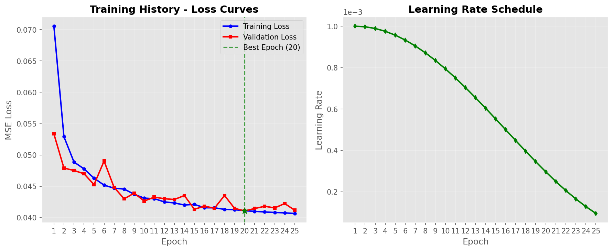
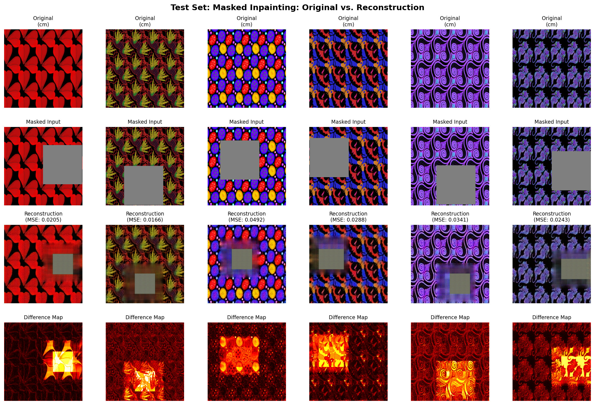
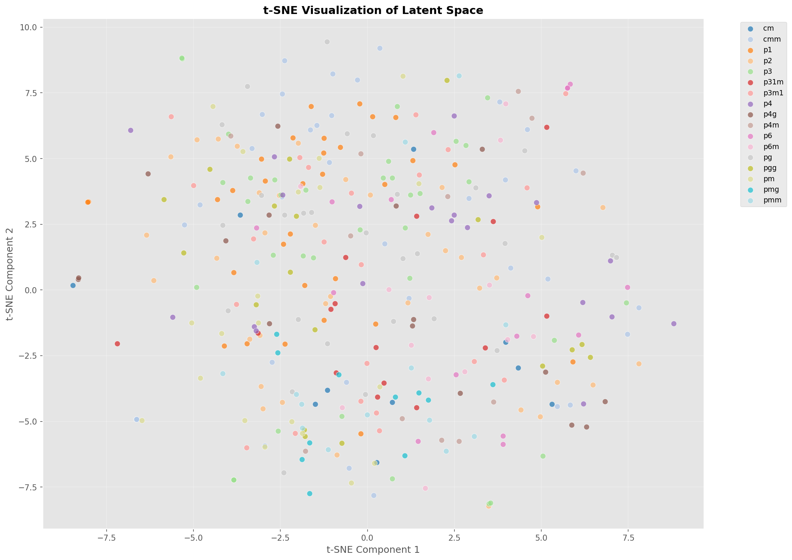
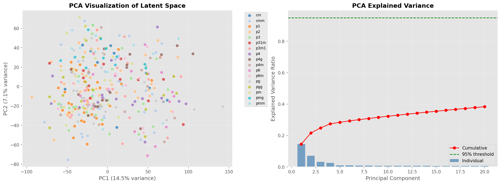
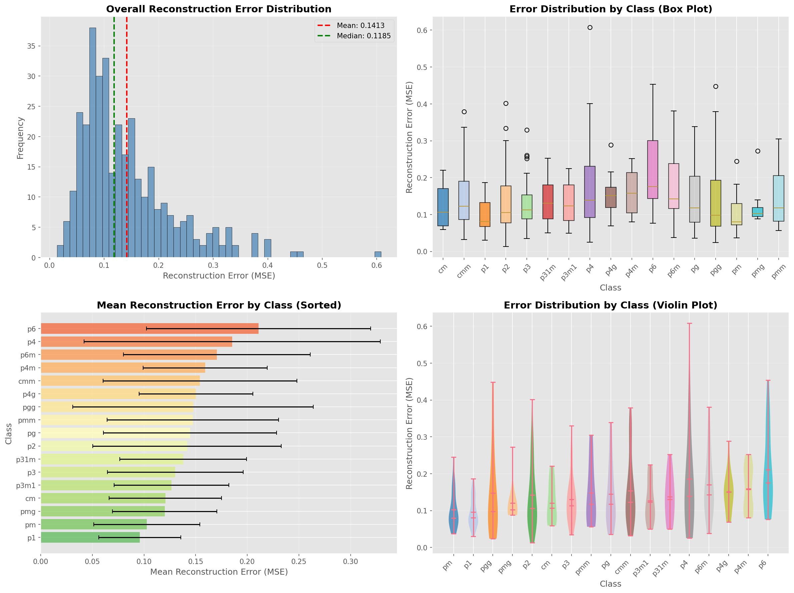
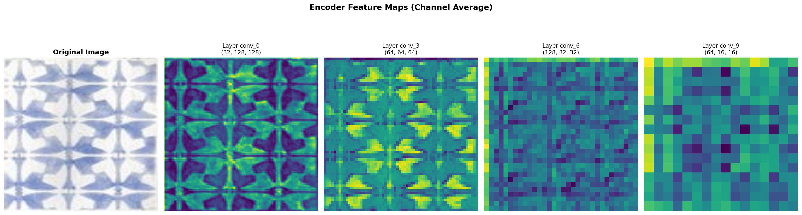
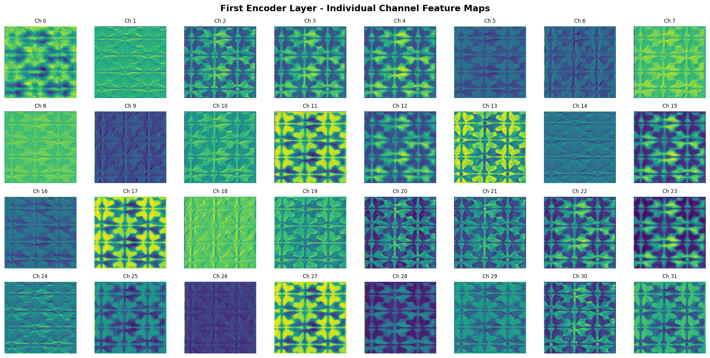
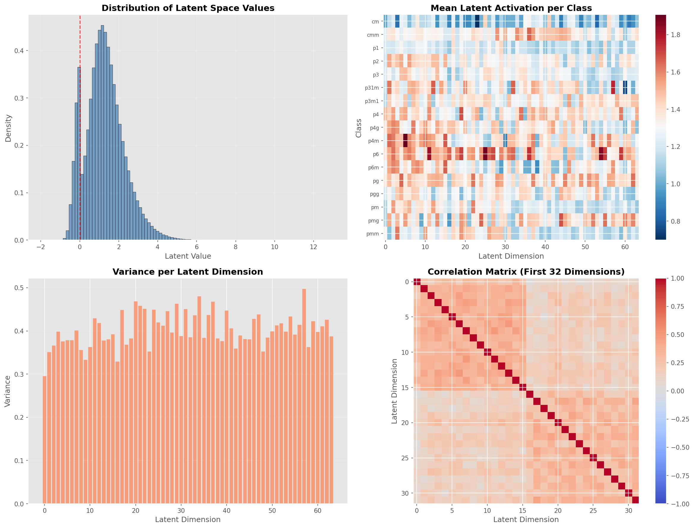

ConvAutoencoder(
(encoder): Sequential(
Conv2d(3, 32, kernel=3, stride=2, padding=1) → BatchNorm2d → LeakyReLU(0.2)
Conv2d(32, 64, kernel=3, stride=2, padding=1) → BatchNorm2d → LeakyReLU(0.2)
Conv2d(64, 128, kernel=3, stride=2, padding=1) → BatchNorm2d → LeakyReLU(0.2)
Conv2d(128, 64, kernel=3, stride=2, padding=1) → BatchNorm2d → LeakyReLU(0.2)
) → Output: [B, 64, 16, 16] = 16,384 dimensions
(decoder): Sequential(
ConvTranspose2d(64, 128, kernel=4, stride=2, padding=1) → BatchNorm2d → ReLU
ConvTranspose2d(128, 64, kernel=4, stride=2, padding=1) → BatchNorm2d → ReLU
ConvTranspose2d(64, 32, kernel=4, stride=2, padding=1) → BatchNorm2d → ReLU
ConvTranspose2d(32, 3, kernel=4, stride=2, padding=1) → Tanh
)
)
Masking Strategy: Random 25% of image pixels masked during trainingMasked Autoencoder — Inpainting with 25% Masking
The Masked Autoencoder represents a self-supervised learning approach where the model learns to reconstruct images from partially masked inputs. By randomly masking 25% of the input image, the autoencoder is forced to learn meaningful representations that can infer the missing regions based on visible context and underlying symmetry patterns.
Key Insight: This approach tests whether the autoencoder truly understands
the symmetry structure of wallpaper groups by evaluating its ability to complete
masked regions consistently with the underlying pattern. Training time was
1h 26min with a Test MSE (Masked Inpainting) of 0.0659.
Architecture Details
Training Progress & Convergence
Training was conducted for 25 epochs before early stopping was triggered (patience = 5). The model trained on 76,500 samples with a mask ratio of 25%.
| Metric | Value |
|---|---|
| Total Epochs Trained | 25 (early stopping at epoch 20) |
| Mask Ratio | 25% |
| Final Training Loss | 0.040652 |
| Final Validation Loss | 0.041170 |
| Best Validation Loss | 0.041058 |
| Training Time | 1 hour 26 minutes |

Training history showing loss convergence over epochs
Inpainting Reconstruction Comparison
The following visualization shows how the model reconstructs masked regions. The comparison demonstrates the model's ability to infer missing symmetry patterns from visible context.

Original vs Masked vs Reconstructed comparison showing inpainting quality
Per-Class Reconstruction Comparison

Comprehensive per-class reconstruction examples showing how the model handles masked inpainting across all 17 symmetry groups
Latent Space Analysis - t-SNE & PCA
PCA Analysis shows that first 2 components explain 21.6% of variance, indicating a complex latent space. 267 components are needed to explain 95% of variance.

t-SNE visualization showing class separation in latent space

PCA projection (2D captures 21.6% of variance)
Error Distribution Analysis
Detailed error distribution analysis reveals the inpainting quality across the test set.
| Statistic | Value |
|---|---|
| Total Test Samples | 355 |
| Mean Error | 0.066 |
| Std Error | 0.06 |
| Min Error | 0.034 (p1) |
| Max Error | 0.118 (p6) |
| Test MSE | 0.0659 |

Error distribution across test set
Feature Maps

Encoder feature map visualization

Detailed individual channel feature maps
Latent Space Statistics
| Statistic | Value | Note |
|---|---|---|
| Latent Vector Dimension | 16,384 | Same as Standard AE |
| Mean Latent Value | 1.266538 | Not centered at 0 |
| Std Latent Value | 1.005986 | Higher variance |
| Min Latent Value | -1.898084 | Narrower range |
| Max Latent Value | 13.003562 | Higher positive values |
| Sparsity (% zeros) | 0.69% | Low sparsity |

Latent space statistics visualization
Class-wise Reconstruction Performance
Test MSE Loss (Masked Inpainting): 0.0659 — Slightly higher than standard reconstruction due to the challenge of inpainting masked regions. The class-wise analysis shows simpler symmetries (p1, pm) are easier to inpaint correctly.
| Rank | Class | Mean MSE | Std | Performance |
|---|---|---|---|---|
| 1 | p1 | 0.033877 | ±0.029891 | Best |
| 2 | pm | 0.041179 | ±0.034233 | Excellent |
| 3 | cm | 0.047622 | ±0.038020 | Excellent |
| 4 | p3m1 | 0.049538 | ±0.039734 | Excellent |
| 5 | pmg | 0.054193 | ±0.041449 | Good |
| 6 | p3 | 0.057908 | ±0.047727 | Good |
| 7 | p31m | 0.058632 | ±0.037403 | Good |
| 8 | p4m | 0.063517 | ±0.035886 | Good |
| 9 | p2 | 0.063687 | ±0.061649 | Average |
| 10 | pg | 0.066616 | ±0.064319 | Average |
| 11 | cmm | 0.068138 | ±0.080336 | Average |
| 12 | p4g | 0.072085 | ±0.056724 | Average |
| 13 | pmm | 0.074614 | ±0.057311 | Below Average |
| 14 | pgg | 0.080547 | ±0.083709 | Below Average |
| 15 | p6m | 0.094967 | ±0.081291 | Below Average |
| 16 | p4 | 0.113011 | ±0.128241 | Difficult |
| 17 | p6 | 0.118340 | ±0.103816 | Worst |
Observation: The masked autoencoder shows similar performance ranking to the
standard autoencoder, with simpler symmetries (p1, pm) being easier to reconstruct. However,
the overall Test MSE is 0.0659, only slightly higher than standard AE (0.061). Complex
rotational symmetries (p4, p6) remain the most challenging for inpainting.